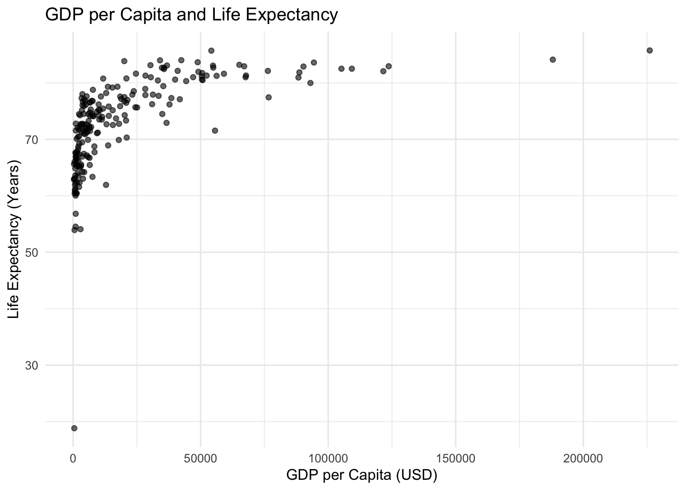
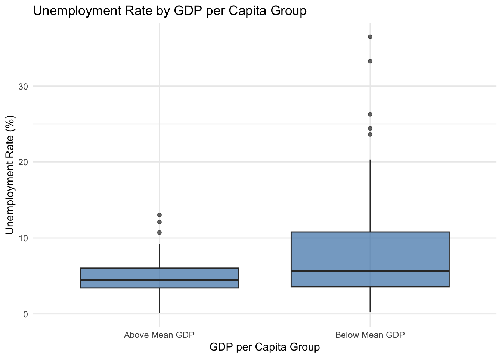

df <- read.csv("wdi.csv")Analysis of World Development Indicators
Q2:Load the Data
Q3: Conduct exploratory data analysis on at least three indicators of your choice. Summarise your findings in markdown sections. Show your code and results.
Indicator 1: life_expectancy
summary(df$life_expectancy) Min. 1st Qu. Median Mean 3rd Qu. Max.
18.82 67.79 74.16 73.11 78.53 85.75 Indicator 2: unemployment_rate
summary(df$unemployment_rate) Min. 1st Qu. Median Mean 3rd Qu. Max. NA's
0.130 3.485 5.337 7.197 9.194 36.472 31 Indicator 3: gdp_per_capita
summary(df$gdp_per_capita) Min. 1st Qu. Median Mean 3rd Qu. Max. NA's
303 2899 7656 21143 28360 226052 8 sd(df$life_expectancy, na.rm = TRUE)[1] 7.942539sd(df$unemployment_rate, na.rm = TRUE)[1] 5.845956sd(df$gdp_per_capita, na.rm = TRUE)[1] 31040.3cor(df[, c("life_expectancy",
"unemployment_rate",
"gdp_per_capita")],
use = "complete.obs") life_expectancy unemployment_rate gdp_per_capita
life_expectancy 1.0000000 -0.1001881 0.6087743
unemployment_rate -0.1001881 1.0000000 -0.2007694
gdp_per_capita 0.6087743 -0.2007694 1.0000000Summary: Life expectancy ranges from 18.82 to 85.75 years, with a mean of 73.11 and a median of 74.16, suggesting a fairly symmetric distribution centered in the low-to-mid 70s. The interquartile range (67.79 to 78.53) indicates that most countries cluster within a relatively narrow band. The standard deviation of 7.94 years suggests moderate dispersion across countries. Overall, life expectancy appears relatively stable compared to the other indicators.
Unemployment rates vary substantially, ranging from 0.13% to 36.47%. The mean (7.20%) is higher than the median (5.34%), indicating a right-skewed distribution, likely driven by countries with very high unemployment levels. The standard deviation is 5.85 percentage points, reflecting notable cross-country variation. There are 31 missing observations, which should be considered when interpreting results.
GDP per capita shows extremely wide variation, from $303 to $226,052, with a median of $7,656 and a much larger mean of $21,143. The large gap between the mean and median, combined with a very high standard deviation (31,040), indicates a strong right-skewed distribution, driven by a small number of very wealthy countries. There are 8 missing observations. This degree of dispersion suggests that a log transformation may be useful in further analysis.
Q4
Warning: Removed 8 rows containing missing values or values outside the scale range
(`geom_point()`).


Q5
| Variable | Mean | Median | Std..Dev. | Min | Max | N |
|---|---|---|---|---|---|---|
| Life Expectancy | 72.75 | 74.12 | 8.10 | 18.82 | 84.00 | 181 |
| Unemployment Rate | 7.17 | 5.29 | 5.85 | 0.13 | 36.47 | 181 |
| GDP per Capita | 17616.13 | 6626.48 | 23704.93 | 302.99 | 123719.66 | 181 |
Q6
As shown in Figure 1,, GDP per capita is positively associated with life expectancy. As shown in Figure 2, countries with GDP per capita below the sample mean exhibit greater dispersion in unemployment rates compared to countries above the mean. Descriptive statistics are presented in Table 1.
Q7
Mandel and Liebens (mandel2019gdp?) show that unemployment is related to GDP. Health also plays a significant role in economic growth (Neofytidou and Fountas 2020).
References
Neofytidou, Aliona, and Stilianos Fountas. 2020. “The Impact of Health on GDP: A Panel Data Investigation.” Journal of Economic Asymmetries 21: e00139. https://doi.org/10.1016/j.jeca.2019.e00139.